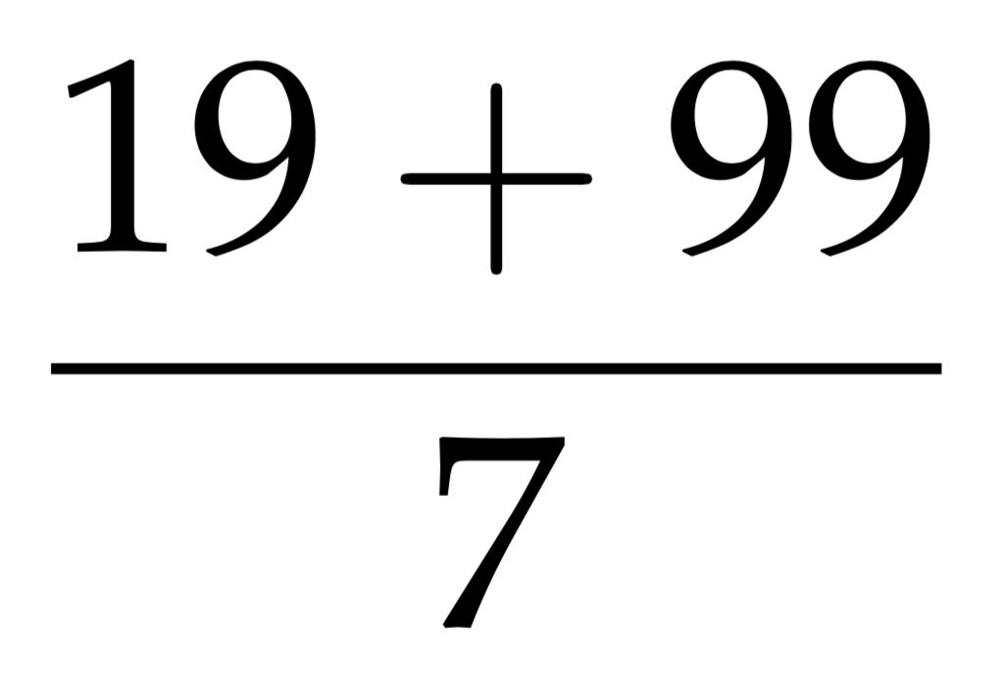
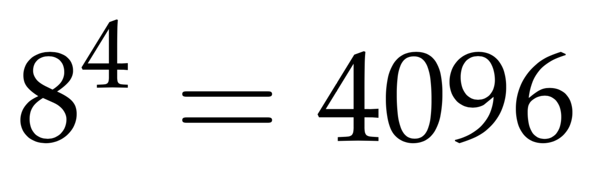
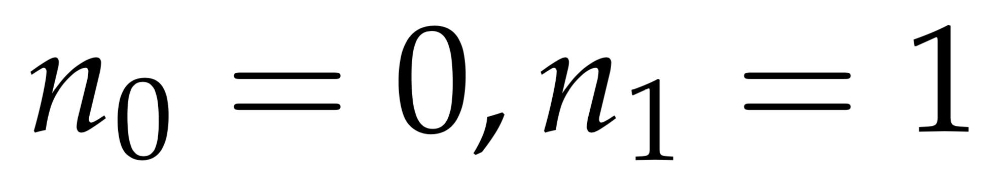
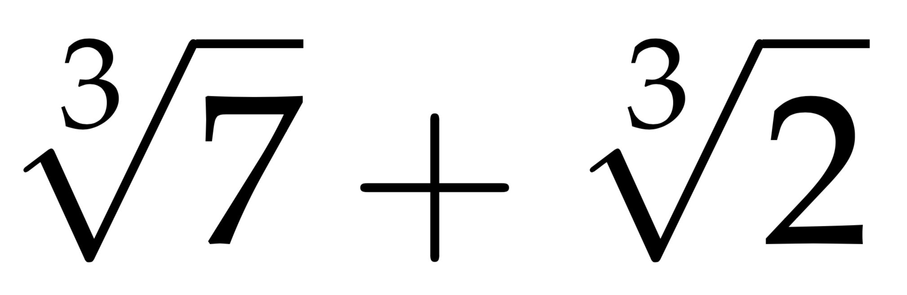
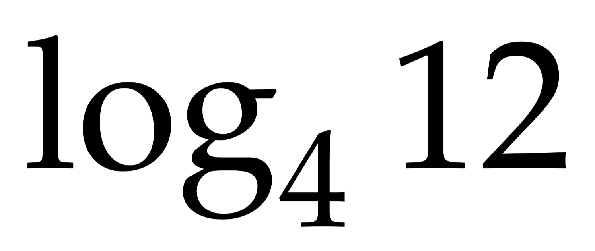
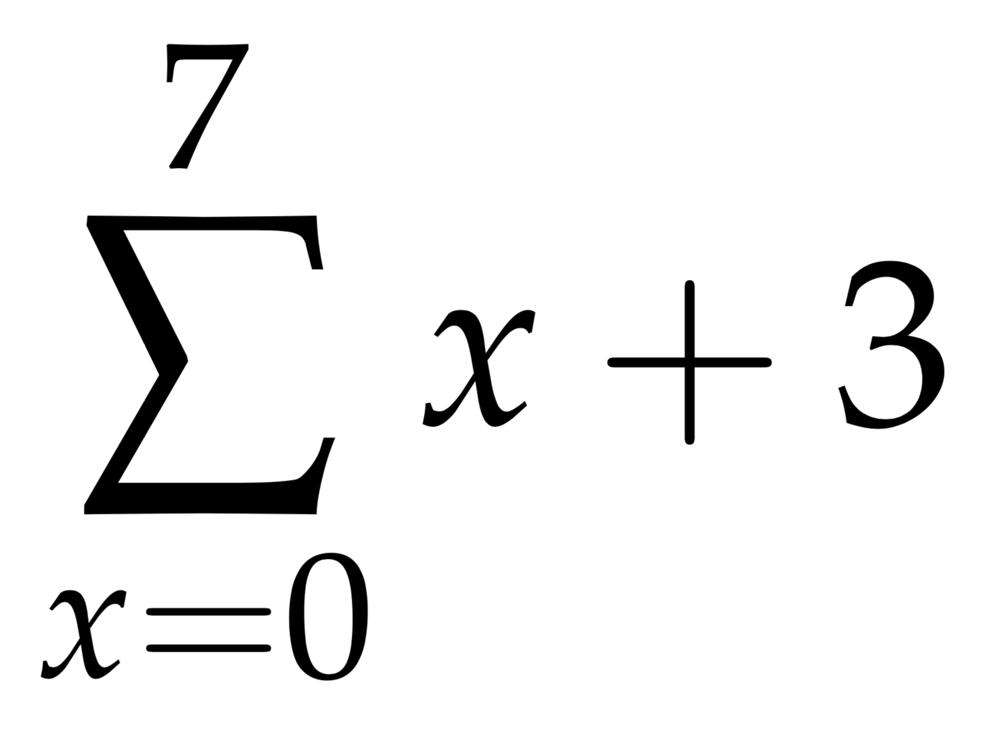
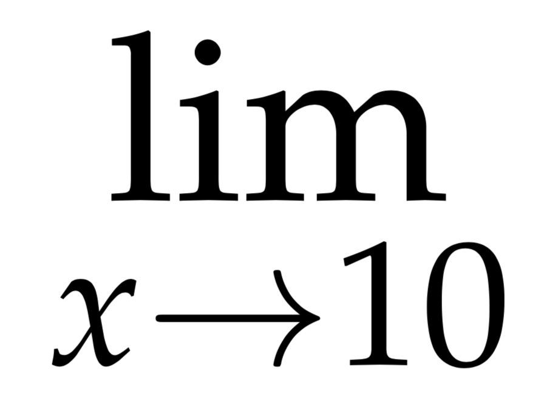
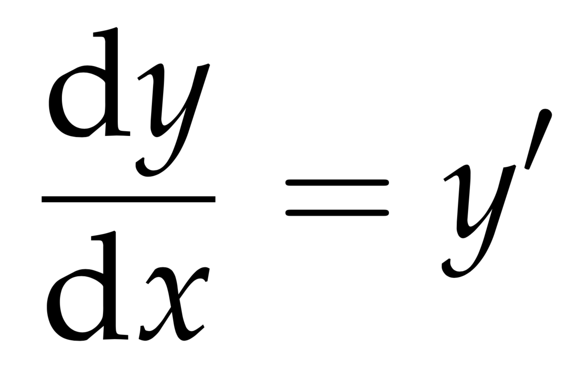
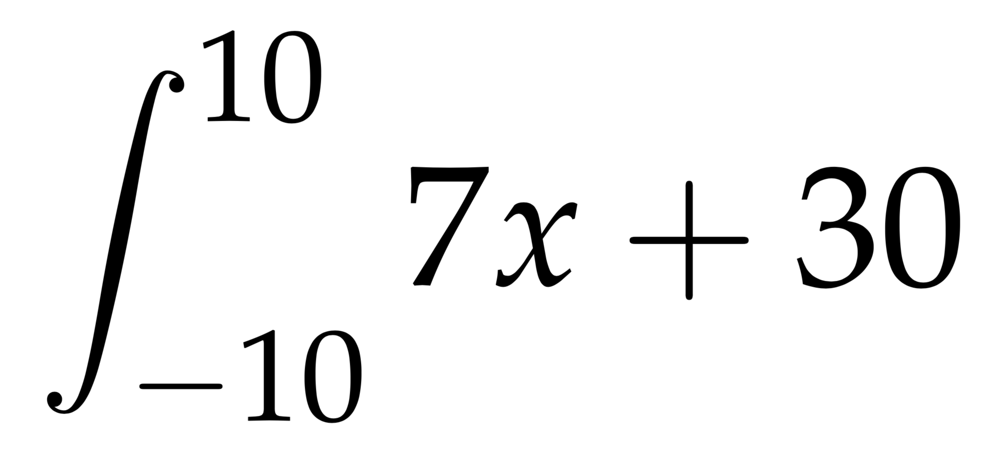

Basic Syntax
To write in latex in mathematical language you need a base. In this
section you will find the basic commands to write the main operations. Below there is a
list of the topics we will touch.
Fractions -
\frac{}{}A fraction is a way to express a quantity based on the division of an
object in a certain number of parts of the same dimension. It is composed of a numerator,
which represents the part respect to the total, represented by the denominator.
In order to write a fraction in LaTeX you have to use the command
In order to write a fraction in LaTeX you have to use the command
\frac{a}{b},
where a is the numerator and b is the denominator.CODE
$$\frac{19+99}{7}$$

Exponentiations (Superscript) -
a^{}The exponentiations is an operation that associates to a pair of numbers
a and n, called respectively base and exponent, the number
given by the product of n factors equal to a. This function can also be used as superscript
of something.
In LaTeX we write
In LaTeX we write
a^{b}, where a is the base and
b the exponent.CODE
$$8^{4}=4096$$

Subscripts -
a_{}Often in mathematics, as in other fields, the subscripts are used to indicate a
certain value or a certain constant.
We write
We write
a_{b} in LaTeX, where a is the base number and b
is the subscript.CODE
$$n_{0}=0, n_{1}=1$$

nth roots -
\sqrt[]{}An nth root of a number x, where n is usually
assumed to be a positive integer, is a number r which, when raised to the power n
yields x: rn = x, where n is the degree of the root.
In LaTeX the
In LaTeX the
\sqrt{x} command allows you to write the square root of a number x.
Instead if you want to write the nth root of any number you can use the command
\sqrt[a]{b}, where a is the root degrees and b is the root number.CODE
$$\sqrt[3]{7}+\sqrt[3]{2}$$

Logarithms -
\log_{}The logarithm of a number in a certain base is the exponent to which the
base must be elevated to obtain the same number.
We write
We write
\log_{a}b in LaTeX in
order to indicate the logarithm to base a of b.CODE
$$\log_{4}12$$

Summations and Product -
\sum_{}^{},
\prod_{}^{}The summation is a mathematical symbol that shortens, in a synthetic notation,
the sum of a certain set of addends. It is composed by the symbol Σ, the summation index,
the two lower and higher limits and a function.
In LaTeX we write
In LaTeX we write
\sum_{b}^{x=a}f(k), that is, the summation for x ranging from
a to b of f(k).Similarly, the product is a symbol that shortens the multiplication of a number of factors
into a synthetic notation. It is composed by the symbol Π, the product index,
the two lower and higher limits and a function.
To build a product in LaTeX we write
To build a product in LaTeX we write
\prod_{b}^{x=a}f(k), which means the product
for x ranging from a to b of f(k).CODE
$$\sum_{x=0}^{7}x+3$$

Limits -
\lim_{}The concept of limit serves to describe the course of a function as its subject
approaches to a given value.
In LaTeX we write
In LaTeX we write
\lim_{a \to b} to say that the value of a is
getting closer and closer to b. The command \to is used to build the arrow that leads
a to b.CODE
$$\lim_{x \to 10}$$

Derivatives -
\frac{\mathrm{d} }{\mathrm{d} x}The derivative is the measure of how much the growth of a function changes as its
argument changes.
We use this syntax in LaTeX:
We use this syntax in LaTeX:
\frac{\mathrm{d} f}{\mathrm{d} x}, where f is
the function that we want to derive.CODE
$$\frac{\mathrm{d} y}{\mathrm{d} x} = y'$$

Integrals -
\int_{}^{}The integral is an operator that, in the case of a function of a single variable,
associates to the function the area under the graph within a given interval
There are two type of integrals: the undefided and the defined. In LaTeX we write the first as
[a, b] in the domain.There are two type of integrals: the undefided and the defined. In LaTeX we write the first as
\int
and the second as \int_{a}^{b}, where a is the beginning of the considered
graph and b the end.CODE
$$\int_{-10}^{10}7x+30$$

Exercises
1) Write the steps to find the hypotenuse length of a 4cm base right triangle and 3cm high by using
the Pitagora Theorem.
Then, in a second line, multiply it by the logarithm of base 10 of 100.
$$\sqrt{4^{2}+3^{2}} = 5//
5 x \log_{10}100 = 10$$
2) Using a summation, write the sum of the first 5 numbers raised to the power of 3/2, starting with 1.
\sum_{5}^{x=1}x^{\frac{3}{2}} \cong 28.205